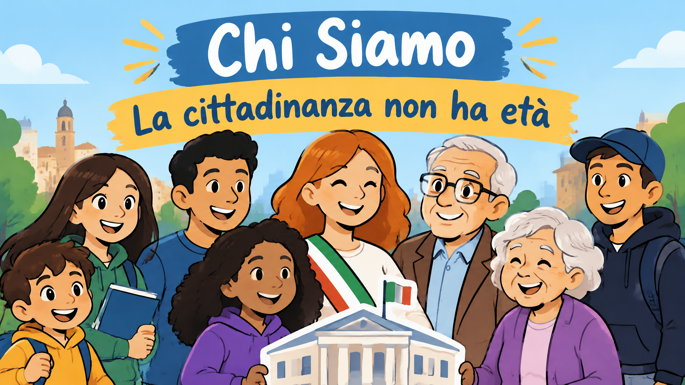

Auser è un'associazione di volontariato e di promozione sociale iscritta nel Registro Unico Nazionale del Terzo Settore (RUNTS). Fa parte di quel mondo di realtà che operano senza scopo di lucro per il bene comune e che, nel nostro Paese, svolgono un ruolo fondamentale nel welfare, nella coesione sociale e nella partecipazione civica.
Il suo impegno principale è favorire l'invecchiamento attivo degli anziani e valorizzarne il ruolo nella società. La proposta associativa è rivolta in primo luogo alle persone anziane, ma è aperta al dialogo tra generazioni, nazionalità e culture diverse. L'obiettivo è costruire una società in cui ogni persona sia protagonista e risorsa per sé e per gli altri, a tutte le età.
Le origini
Auser nasce per iniziativa della CGIL e del sindacato dei pensionati SPI-CGIL. Il legame con il sindacato è un tratto distintivo: l'associazione porta nella vita di pensionati e anziani i valori della tradizione sindacale, come solidarietà, dignità del lavoro e della persona e partecipazione democratica.
Il lavoro, nel pensiero dell'associazione, non finisce con il pensionamento: cambia forma e può continuare a generare valore per la comunità.
Auser è un'associazione costituita a Gubbio nel 2002.
Ma associata a AUSER nazionale fondata
nel 1980, da un'intuizione del segretario della CGIL.
La sede di Gubbio è radicata nel territorio e si inserisce in una rete nazionale. Questo modello, che unisce una struttura nazionale con l'attività delle singole comunità, permette di rispondere ai bisogni concreti di ogni territorio mantenendo una visione comune.
La nostra missione
Auser lavora affinché ognuno possa dare e trovare aiuto, incontrare gli altri, arricchire le proprie competenze e contribuire alla crescita della comunità in cui vive.
Ogni età ha un valore. Ogni persona ha un proprio progetto di vita, che può realizzarsi come risorsa per sé e per gli altri, sia nella fase lavorativa sia nella pensione, sia nei primi anni di vita sia negli ultimi.
Auser si propone di:
Migliorare la qualità della vita delle persone, di tutte le età, perché il benessere dipende anche dalle relazioni, dagli spazi di partecipazione e dalla possibilità di sentirsi utili.
Contrastare ogni forma di esclusione e discriminazione sociale, in particolare nei confronti delle persone migranti e delle donne di tutte le età, spesso esposte a isolamento e disuguaglianza.
Sostenere le fragilità, senza lasciare indietro chi attraversa momenti di difficoltà, malattia, solitudine o perdita.
Diffondere la cultura e la pratica della solidarietà e della partecipazione, promuovendo l'idea che la cura reciproca sia un patrimonio collettivo.
Valorizzare l'esperienza, le capacità, la creatività e le idee degli anziani, riconoscendone il contributo come patrimonio della comunità.
Sviluppare rapporti di solidarietà e di scambio con le generazioni più giovani, per costruire ponti tra età diverse e trasmettere memoria, competenze e nuovi linguaggi.
Invecchiamento attivo
L'invecchiamento attivo, promosso anche dall'Organizzazione Mondiale della Sanità, indica il processo di ottimizzazione delle opportunità di salute, partecipazione e sicurezza, per migliorare la qualità della vita man mano che le persone invecchiano. Non riguarda solo la salute fisica: include la partecipazione sociale, l'apprendimento continuo, il volontariato e la capacità di mantenere relazioni significative.
Auser interpreta questo principio in modo concreto: la vecchiaia non è una stagione di ritiro e isolamento, ma una fase in cui è ancora possibile scoprire, imparare, donare e costruire.
- Solidarietà: aiutare e farsi aiutare, senza distinzioni.
- Partecipazione: ogni persona è chiamata a essere parte attiva della propria comunità.
- Inclusione: nessuno deve essere escluso per età, origine, genere o condizione personale.
- Dignità: ogni età ha un valore e ogni percorso di vita merita rispetto.
- Intergenerazionalità: il dialogo tra giovani e anziani arricchisce entrambi.
- Invecchiamento attivo: la vecchiaia come occasione di scoperta, impegno e relazioni.
- Autonomia e responsabilità: la capacità di scegliere come impiegare il proprio tempo e le proprie risorse.
- Apprendimento permanente: la curiosità e la voglia di imparare non hanno età.
Il valore del volontariato
Il volontariato è il cuore di Auser. Chi partecipa mette a disposizione tempo, competenze ed energie e riceve in cambio relazioni, crescita personale e la soddisfazione di contribuire al benessere collettivo. Non è un gesto isolato di generosità, ma un modo per costruire legami, prendersi cura degli altri e far crescere la comunità.
Ogni volontario, a qualsiasi età, può trovare un proprio spazio nella rete. Chi ha una lunga esperienza professionale può metterla a frutto. Chi ha più tempo libero può dedicarlo all'ascolto e alla compagnia. Chi è giovane può portare energie nuove, competenze digitali e idee innovative.
Come partecipare
Entrare a far parte di Auser significa:
- iscriversi come socio, sostenendo la missione dell'associazione;
- mettersi a disposizione come volontario, in base alle proprie capacità e disponibilità;
- proporre idee e progetti alla propria sede locale;
- costruire relazioni con persone di età, origini e storie diverse;
- contribuire alla vita della comunità, portando il proprio punto di vista e la propria esperienza.
Auser in numeri
Oggi Auser Nazionale conta:
| 260 mila Oltre 260 mila soci | 30 mila Volontari | 1.685 Sedi tra strutture e affiliate in tutta Italia |
Invito alla partecipazione
Auser è un luogo in cui l'esperienza diventa risorsa, la solitudine si trasforma in incontro e la comunità si costruisce insieme. Che tu sia una persona anziana che desidera restare attiva, un giovane che cerca un impegno significativo o un cittadino che vuole dare il proprio contributo, c'è sempre un modo per partecipare.
La cittadinanza non ha età.